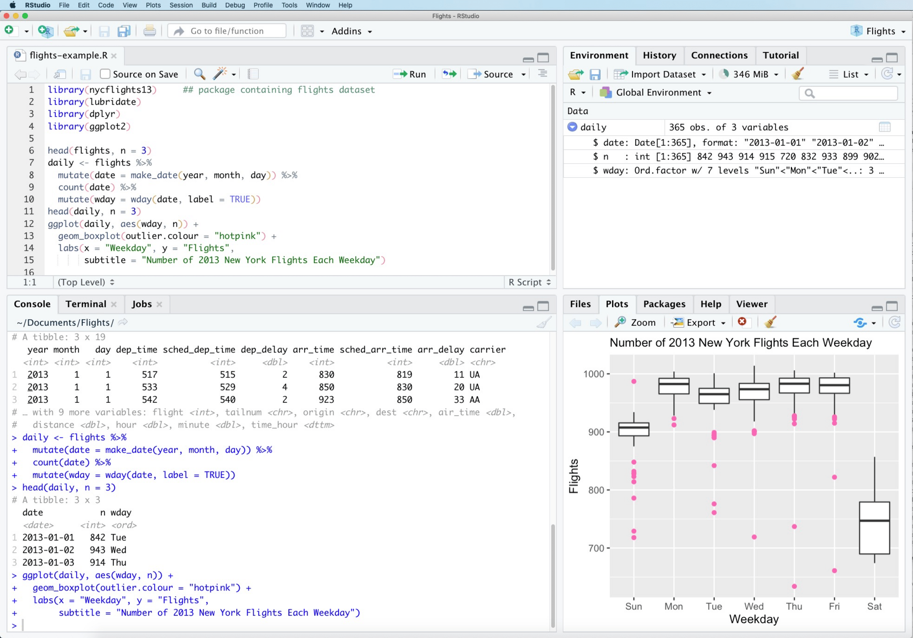

1 Get ready!
Unlike most modules you may have taken so far, the regular learning activities and tasks involved in completing Quantitative Social Research require intensive use of computers, scientific software and data.
You are also strongly encouraged to bring your laptop to the workshops to make sure you have a consistent working environment in which your code can run without major issues.
Thus, and to make sure we are all in the same page as far as computing is concerned, this pre-sessional learning unit introduces some basic steps you need to follow to set up your computer for the module.
1.1 Required software
In this module we will conduct data analysis using R, which is is a free and open-source programming language for statistical analysis and data visualisation that works across most computer operative systems (Windows/Mac/Linux).
R is now an extremely popular language for statistics and data science in academia, industry, data journalism and increasingly in government. You can think of it as an extremely sophisticated calculator or engine that will process and analyse your data by means of its own core functions - e.g. mean() will calculate the average of a variable - and those in packages programmed by other contributors that you will need to install - e.g. geom_bar() from the ggplot2 package will draw the bars in bar chart based.
This is what the R terminal looks like:
In practice, you will probably never use the R terminal to conduct your research. Instead you will use RStudio which is an extremely popular Integrated Development Environment (IDE). RStudio essentially acts as an intermediate layer between the researcher and R that helps make R much easier to use by providing a more structured and user-friendly interface as well as a large number of additional features, for example, Quarto which allows us to produce documents with code and output (such as this electronic book). It looks like this:

1.1.0.1 Step 1: Install R
You can download R from here . Choose the version that corresponds to your operative system (Windows/Mac/Linux) and download the file.
Once downloaded, double-click the installation file and accept all the default options.
1.1.0.2 Step 2: Install R-Studio
You can download RStudio from here. Again, choose the version that corresponds to your operative system, though the web will probably recognise it automatically and give you the correct file.
If you prefer, here’s a video guide on how to install R and RStudio and a brief intro to the RStudio interface
1.2 Other software you may want to consider:
Although, strictly speaking, only R and R-Studio are needed, there is other software out there that you may find helpful in working towards your assessment and even for your dissertation. This list may grow throughout the semester.
Zotero - This is a powerful bibliography manager that helps you organise all of your references (articles, books, reports, websites, etc) as well as annotate them. It will also produce files that you can then use to produce formatted citations and lists of references when writing your work in either RStudio or Word.
…
1.3 Access to workshop data
In this module we will exclusively work with secondary datasets. These are computer files that contain data previously collected from human participants by researchers other than ourselves and research agencies other than those we may work for or on behalf of (in our case, the University). These datasets have in turn been made publicly available in data repositories for other researchers to use for purposes that may or may not be the same as those originally intended by the data holders. Sometimes, such as for general surveys, questionnaires are designed to include a long list of items such that the resulting datasets enable researchers across different disciplines (sociology, criminology, social policy, economics, political science, geography, etc) to conduct analysis on very different topics.
In this module we will primarily work with datasets from the UK Data Service, but to make things easier the files will be made available to you via Minerva. Before accessing the data files, you need to sign the declaration in the section [SPECIFY SECTION] on Minerva.
To do this, follow this procedure
1.3.1 Access to project (and dissertation?) data
Beyond the datasets we use in the workshops, you are likely to draw from either the UK Data Service or other repositories (GESIS, ESS) to choose a dataset for your assessment project.
There are however some access conditions and use restrictions that researchers need to agree to comply with before they can get access to such datasets. This is why you are expected to register your use of the datasets and sign a declaration.
https://ukdataservice.ac.uk/learning-hub/students/resources/data-for-your-project/
and with the European Social Survey
t.
https://ukdataservice.ac.uk/learning-hub/students/resources/data-for-your-project/